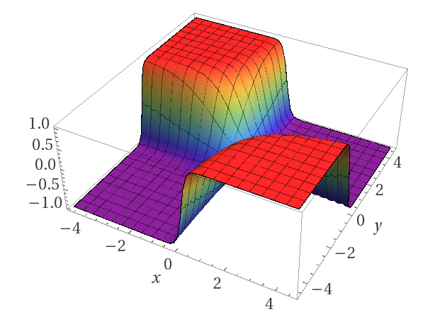
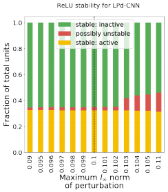
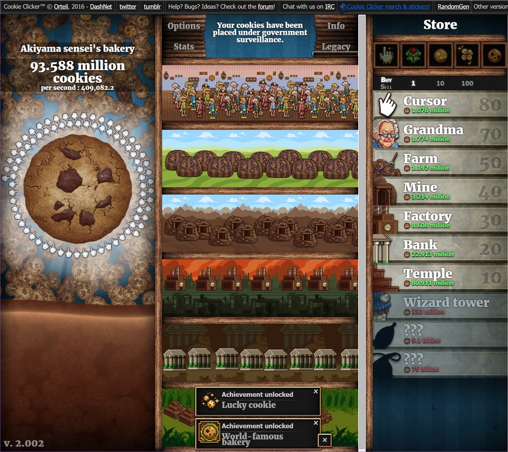
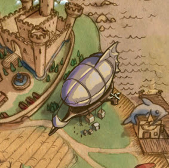

Research
In robust machine learning, I am currently interested in using theoretical insights to help develop more robust and secure machine learning models. If machine learning models are to be deployed in the real world, we want these models to be reliable; however, the existence of adversarial examples - impercetibly modified inputs that fool state-of-the-art classifiers - raises concerns about the brittleness of such models. A major focus of my research has been on effective methods of formally verifying the robustness of these models.
I am also interested in understanding reinforcement learning and its potential applications, both to gaming and beyond.
In the past, I have analyzed various games from a more algorithmic point of view, including through the lenses of computational complexity, approximation algorithms, and online algorithms.
Preprints
|

|
Training for Faster Adversarial Robustness Verification via Inducing ReLU Stability
Kai Xiao, Vincent Tjeng, Nur Muhammad (Mahi) Shafiullah, Aleksander Madry
Proceedings of the International Conference on Learning Representations (ICLR), 2019
This paper explores co-designing neural networks to be both robust and easily verifiable. The paper identifies two key properties of neural networks that make it more amenable to verification - weight sparsity and ReLU stability - and describes regularization methods to achieve these goals during training without significantly hurting the neural network's accuracy. These techniques can be used in conjunction with any standard training procedure, and they allows us to train provably robust networks for MNIST and CIFAR-10.
|
|

|
Evaluating Robustness of Neural Networks with Mixed Integer Programming
Vincent Tjeng, Kai Xiao, Russ Tedrake
Proceedings of the International Conference on Learning Representations (ICLR), 2019
This paper leverages mixed integer linear programs to verify the robustness of neural networks in a speed that is two to three orders of magnitude quicker than the previous state-of-the-art. The computational speedup is achieved through tight formulations for non-linearities, as well as a novel presolve algorithm that makes full use of all information available. This allows us to verify the robustness of larger convolutional networks, and determine, for the first time, the exact adversarial accuracy of an MNIST classifier to norm-bounded perturbations.
|
|

|
Cookie Clicker
Erik D. Demaine, Hiro Ito, Stefan Langerman, Jayson Lynch, Mikhail Rudoy, Kai Xiao
Oral Presentation at JCDCG^3, 2017
Cookie Clicker is a popular online incremental game where the goal of the game is to generate as many cookies as possible. In the game you start with an initial cookie generation rate, and you can use cookies as currency to purchase various items that increase your cookie generation rate. In this paper, we analyze strategies for playing Cookie Clicker optimally. While simple to state, the game gives rise to interesting analysis involving ideas from NP-hardness, approximation algorithms, and dynamic programming.
|
|

|
Online Algorithms Modeled After Mousehunt
Jeffrey Ling, Kai Xiao, Dai Yang
In this paper we study a variety of novel online algorithm problems inspired by the game Mousehunt. We consider a number of basic models that approximate the game, and we provide solutions to these models using Markov Decision Processes, deterministic online algorithms, and randomized online algorithms. We analyze these solutions' performance by deriving results on their competitive ratios.
|